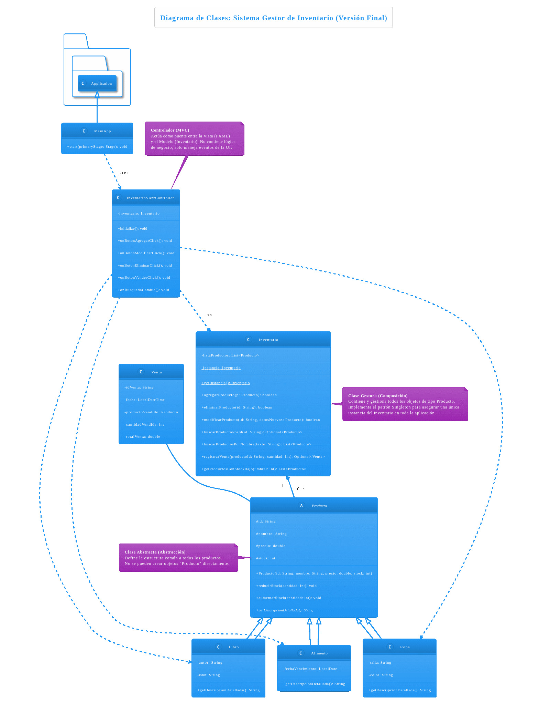
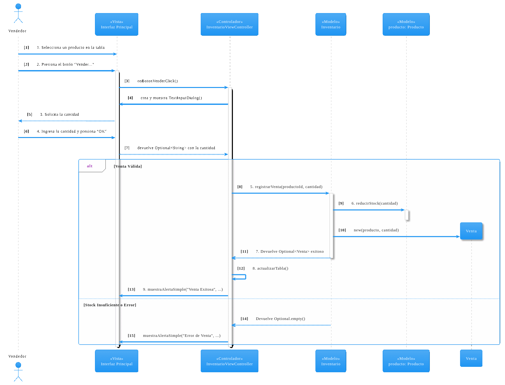

Informe de Proyecto: Sistema Gestor de Inventario
Asignatura: ELO329 - Diseño y Programación Orientados a Objetos
Integrantes:
Tomás Chacana
Victoria Fernandez
1. Descripción del Problema
El presente proyecto aborda la necesidad fundamental de las pequeñas y medianas empresas de contar con una herramienta digital para la gestión de su inventario. Muchas de estas empresas dependen de métodos manuales o planillas de cálculo, los cuales son propensos a errores, dificultan el seguimiento en tiempo real del stock y no ofrecen una visión clara de las operaciones. Nuestro sistema busca resolver este problema proveyendo una aplicación de escritorio intuitiva, robusta y persistente para administrar productos, monitorear el stock y registrar ventas de manera eficiente.
2. Análisis del Problema
El contexto del sistema es una empresa minorista que maneja distintos tipos de productos. Las entidades y actores principales que interactúan en este ecosistema son:
Producto: Es la entidad central. Representa cualquier artículo que la empresa vende. Cada producto tiene atributos comunes (ID, nombre, precio, stock) y otros específicos a su tipo (ej. un libro tiene autor, una prenda de ropa tiene talla).
Inventario: Es el contenedor de todos los productos. Actúa como el gestor central que maneja la lógica de negocio como agregar, modificar, eliminar y buscar productos.
Venta: Representa la transacción de vender un producto, lo que implica una reducción en el stock y un registro de la operación.
Usuario (Administrador/Vendedor): Es el actor humano que interactúa con el sistema para realizar las operaciones de gestión, como añadir nuevos productos, actualizar el stock o registrar una venta.
3. Definición de Requerimientos (Casos de Uso)
A continuación, se detallan los tres casos de uso principales que definen la funcionalidad del sistema.
Caso de Uso 1: Agregar Nuevo Producto al Inventario
ID: CU-01
Actor Principal: Administrador
Propósito: Permitir al Administrador registrar un nuevo artículo en el sistema de inventario, incluyendo sus atributos específicos según el tipo de producto.
Pre-condiciones: El Administrador debe haber iniciado sesión en el sistema.
Curso Normal de Eventos:
El Administrador selecciona la opción "Agregar..." en la interfaz principal.
El Sistema presenta un formulario para ingresar los datos del nuevo producto, permitiendo seleccionar el tipo (Libro, Ropa).
Al seleccionar un tipo, el Sistema muestra campos adicionales específicos para ese tipo.
El Administrador completa todos los campos y presiona "Guardar".
El Sistema valida los datos (ID no duplicado, números válidos).
El Sistema crea el objeto Producto correspondiente y lo almacena en el inventario.
El Sistema actualiza la tabla principal para mostrar el nuevo producto y cierra el formulario.
Cursos Alternativos:
ID Duplicado: Si el ID ya existe, el Sistema muestra un mensaje de error y no guarda el producto.
Datos Inválidos: Si un dato numérico es incorrecto (ej. negativo o no es un número), el Sistema muestra un error y no guarda.
Post-condiciones: El producto está registrado y disponible para ventas y reportes.
Caso de Uso 2: Registrar Venta de Producto
ID: CU-02
Actor Principal: Vendedor
Propósito: Permitir al Vendedor registrar la venta de un producto, actualizando el stock automáticamente.
Pre-condiciones: El Vendedor ha iniciado sesión. El producto a vender existe en el inventario.
Curso Normal de Eventos:
El Vendedor selecciona un producto de la tabla.
El Vendedor presiona el botón "Vender...".
El Sistema muestra un diálogo solicitando la cantidad a vender.
El Vendedor ingresa una cantidad y presiona "OK".
El Sistema valida que haya stock suficiente.
El Sistema descuenta el stock, crea un registro de la Venta y actualiza la tabla principal.
El Sistema muestra un mensaje de confirmación de la venta.
Cursos Alternativos:
Stock Insuficiente: Si la cantidad solicitada es mayor al stock, el Sistema muestra un error y no procesa la venta.
Post-condiciones: El stock del producto ha disminuido. La venta queda registrada.
Caso de Uso 3: Generar Reporte de Stock Bajo
ID: CU-03
Actor Principal: Administrador
Propósito: Proveer una vista filtrada de los productos con bajo nivel de stock para facilitar la reposición.
Pre-condiciones: El Administrador ha iniciado sesión.
Curso Normal de Eventos:
El Administrador presiona el botón "Reporte Stock Bajo".
El Sistema, usando un umbral predefinido (ej. 10 unidades), obtiene la lista de productos con stock bajo.
El Sistema actualiza la tabla principal para mostrar únicamente los productos filtrados.
Cursos Alternativos:
Si no hay productos con stock bajo, la tabla se muestra vacía.
Post-condiciones: El Administrador visualiza el reporte. El estado de los productos no se modifica.
4. Diseño (Diagramas UML)
4.1. Diagrama de Clases
El siguiente diagrama muestra la arquitectura principal de la aplicación. Se basa en el patrón Modelo-Vista-Controlador (MVC). El Modelo está compuesto por las clases Producto, Libro, Ropa, Inventario y Venta. La Vista es el archivo InventarioView.fxml, y el Controlador es la clase InventarioViewController que conecta ambas capas. Se destacan los conceptos de Herencia (Producto -> Libro/Ropa), Composición (Inventario contiene Productos) y Abstracción (Producto es una clase abstracta).

4.2. Diagrama de Secuencia para "Registrar Venta"
Este diagrama ilustra la secuencia de interacciones entre los objetos del sistema para cumplir con el Caso de Uso 2. Muestra cómo un evento en la Vista (onBotonVenderClick) desencadena una serie de llamadas a métodos en el Controlador y el Modelo para ejecutar la lógica de negocio y finalmente actualizar la Vista.

6. Dificultades
Durante el desarrollo, la principal dificultad encontrada fue un bug relacionado con la persistencia de datos. Al guardar el inventario en el archivo CSV, los números decimales (precios) se escribían usando una coma como separador debido a la configuración regional del sistema. Sin embargo, el método de carga esperaba un punto, lo que causaba un NumberFormatException y provocaba que los datos numéricos se cargaran como cero. Este problema se solucionó forzando el uso de la configuración regional de Estados Unidos (Locale.US) al momento de escribir el archivo, asegurando así un formato de datos consistente e independiente de la plataforma. Actualmente, no se conocen bugs mayores en la aplicación.